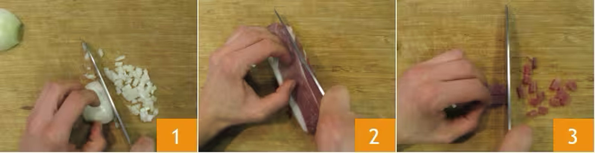
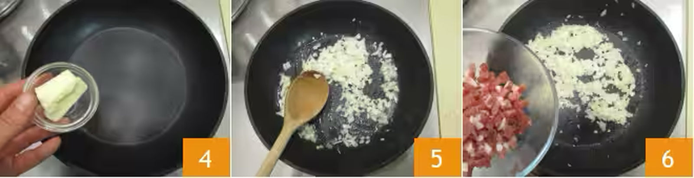
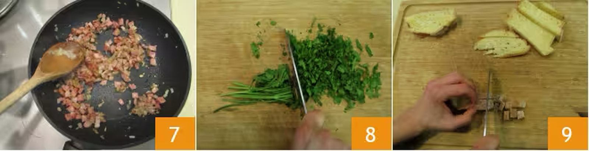
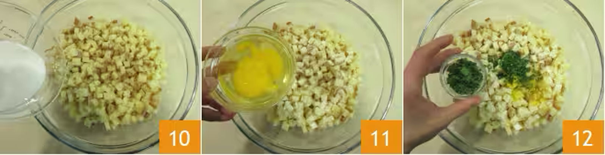
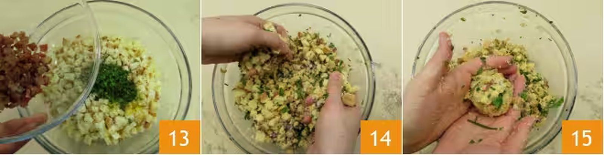
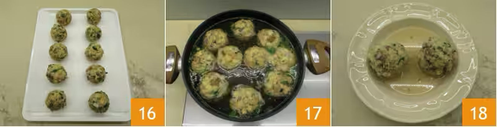

Ricetta canederli alla Tirolese
I canederli (Knödel) sono una vera squisitezza da gustare in Trentino-Alto Adige! Sostanziosi gnocchi di pane realizzati con pane bianco raffermo, erba cipollina, uova, speck e cipolla (alla tirolese) oppure aggiunta di lucanica affumicata (alla trentina).
Ogni famiglia ha il suo segreto per preparare dei canederli dalla giusta consistenza, né troppo duri né troppo morbidi, ma tutti concordano che il brodo di carne sia la maniera più genuina e saporita per cuocerli e gustarli. Se volete invece servirli al burro, allora potrete bollirli in acqua bollente salata prima di condirli.
Noi ci siamo affidati alla ricetta dei canederli alla tirolese depositata l'8 agosto 2003, ma abbiamo anche ascoltato qualche consiglio di chi li fa in casa da decenni secondo la ricetta tramandata in famiglia: i canederli devono essere "sporchi", con pezzi di carne ed erba cipollina ben visibili.
Noi abbiamo preferito una versione piuttosto rustica, con un impasto che si compatta e si amalgama senza perdere alla vista e all'assaggio il pane. Oggi nei ristoranti, nelle gastronomie e nelle fiere si possono trovare tanti gusti diversi di canederli: con gli spinaci, di fegato, con le erbette, alla barbabietola ma vi invitiamo prima di tutto a provare il classico: canederli alla tirolese! Siete pronti per immergervi nell'atmosfera di alta montagna?
Provate anche gli strangolapreti alla trentina, deliziosi gnocchi di pane e spinaci!
Ingredienti
- Pane raffermo 250 g
- Speck 150 g
- Cipolle bianche 50 g
- Uova (medie) 2
- Latte intero 250 g
- Burro 10 g
- Pepe nero q.b.
- Prezzemolo q.b.
- Erba cipollina q.b.
Come preparare i Canederli alla tirolese
Per preparare i canederli alla tirolese, preparate il brodo di carne da tenere in caldo. Poi mondate e tritate finemente la cipolla 1. Tagliate a pezzi molto piccoli lo speck, circa 2-3 mm 3.
In una padella fate sciogliere il burro a fuoco dolce 4, quindi versate cipolla 5 e lo speck. Fate rosolare per 5 minuti mescolando spesso.
Poi spegnete il fuoco e tenete da parte 7. Tritate l'erba cipollina e il ciuffo di prezzemolo 8, quindi tagliate il pane raffermo a dadini di circa 0,5 cm 9.
Versate in una ciotola il pane e aggiungete il latte (iniziate mettendone 200 g e in caso aggiungetene se l'impasto risultasse eccessivamente asciutto e poco malleabile) 10, unite anche le uova 11, l'erba cipollina e il prezzemolo tritati 12.
Proseguite unendo speck e cipolla oramai intiepiditi 13 e iniziate a mescolare per amalgamare il tutto 14. Se l'impasto risultasse troppo asciutto, aggiungete ancora del latte. Se invece dovesse risultare troppo appiccicoso o molle, potete unire pochissima farina al composto. Una volta pronto inumiditevi leggermente le mani con acqua fredda e formate i canederli roteando l'impasto tra le mani. I canederli dovranno avere un diametro di 5 cm 15.
Posizionateli su un vassoio man a mano che li formate 16. Ne verranno circa 10 con queste dosi. Una volta pronti potete cuocerli nel brodo di carne bollente 17. Basteranno 15 minuti di cottura con un bollore moderato. Servite i canederli alla tirolese ben caldi 18.
Conservazione
Potete conservare i canederli crudi per un giorno in frigo chiusi in un contenitore ermetico.
Potete anche congelarli da crudi.
Si consiglia invece di consumare subito i canederli cotti.
Consiglio
La ricetta depositata dei canederli prevede aggiunta di un po' di farina all'impasto, la cui dose varia in base alla consistenza. Spesso in casa si preferisce aggiungere il pangrattato al bisogno, perchè compatta i canederli ma li rende allo stesso tempo morbidi.
Potete sostituire lo speck con la pancetta o la lucanica, che viene utilizzata a Trento e provincia.
Potete utilizzare per lo più pane bianco secco, ma inserire anche un pezzo fresco. Oppure al posto del secco anche quello congelato: dovrete solo regolarvi con la dose di liquido della ricetta.
Vi è rimasto ancora del pane raffermo? Preparate la torta di pane e verdure, una gustosa ricetta svuotafrigo!